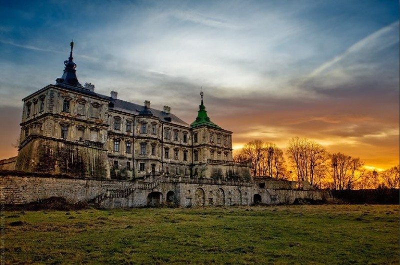
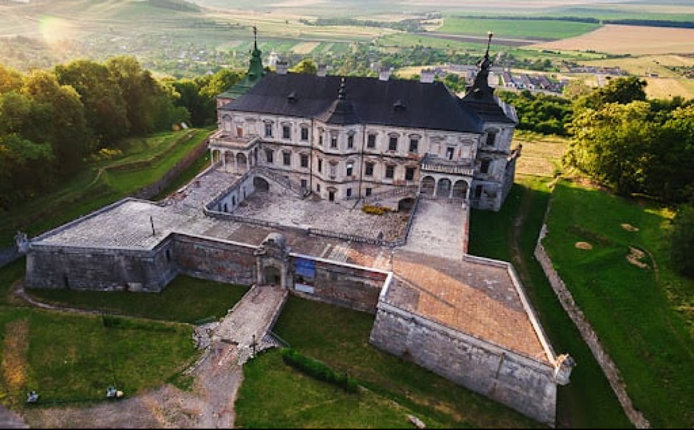
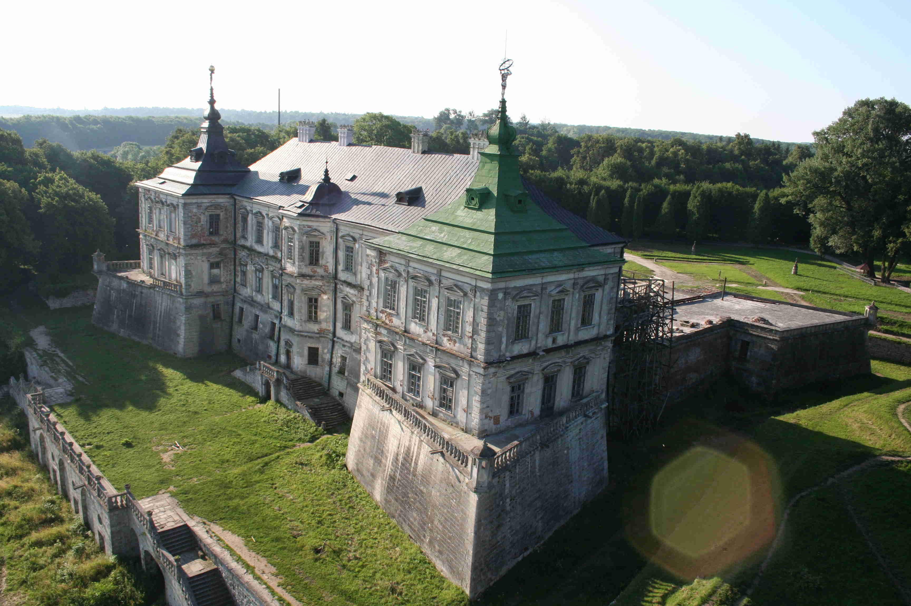
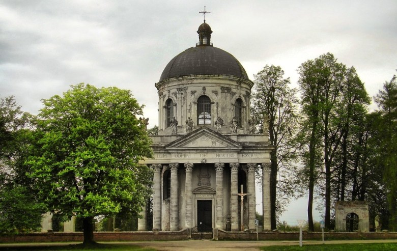

Підгорецький замок
Історія
Підгорецький замок – один з найкращих в Європі зразків поєднання імпозантного палацу з бастіонними укріпленнями. В ансамбль замку, крім нього входять заїжджий двір ХУІІІ ст., костел середини ХУІІІ ст. (архітектор К.Римлянин), парк, який належить до пам’яток садово-паркового мистецтва державного значення. Будувався у 1635-1640 рр. архітектором Андреа дель Акава за участю інженера Гійома де Боплана на замовлення тодішнього власника Підгорець коронного гетьмана Речі Посполитої Станіслава Конєцпольського. Автором палацової декорації був Ян Баптист Фальконі, портали і каміни проектував Константіно Тенкелла. Серед найбагатше оздоблених приміщень виділялась каплиця Богоматері Скорботної. Злиття стилів різних епох відбувалось так органічно, що палац сприймається як цілісний витвір високого мистецтва. Палац складався з великих, просторих залів, назви яких відповідали кольору оббиття стінабо колекціям, які в них зберігалися: "Золотий", "Жовтий", "Китайський", "Дзеркальний", "Кармазиновий", "Лицарський"...
Підгорецький палац вважався одним із найкращих в Європі. Власниками були: Конєцпольські (1635-1682), потім Собеські (1982-1720), Жевуські (1720-1865), Сангушки (1865-1939). У 1940 р. Підгорецький замок був націоналізований. Все, що там залишилося, передали у музеї м. Львова. В замоковому палаці було розташовано санаторій для лікування хворих туберкульозом. В 1956 р. палацовий корпус замку згорів. Вогнем було знищено унікальні дерев'яні різьблені стелі з живописними полотнами, а також мистецьке оздоблення інтер'єрів другого та третього поверхів. У 1997 р. замок передано в користування Львівської галереї мистецтв.
Новітня історія
У грудні 2017 р. волонтери з благодійного фонду «Софос» зібрали шляхом краудфандингу кошти на відновлення балконної групи північно-східної сторони замку й запустили роботи. Зібрані кошти (220 тис. грн.) будуть витрачені на закупівлю матеріалу, оплату робот з виготовлення необхідних балясин і парапетів та їх установки.[1][2] 28 липня—4 серпня 2018 року тут тривав табір «Підгірці. Реновація», в рамках якого понад 30 волонтерів із Києва, Дніпра, Харкова, Львова та Одеси працювали у Підгорецькому замку.[3]
У червні 2018 року в Підгорецькому замку вперше з 1939 року відкрили мистецьку виставку. У залах палацу у рамках експозиції «Історія забуття» розмістили копії картин XVII—XVIII ст. та архівні фотографії замку.
Кілька зал Підгорецького замку відкрили попри те, що реконструкція палацу ще триває. Відвідувачі замку можуть потрапити в Китайський кабінет, Золоту, Кармазинову та Лицарську зали і побачити картини, які прикрашали раніше стіни палацу. Ця експозиція буде постійною і буде доповнюватися новими експонатами.
В експозиції представлені копії полотен роботи Шимона Чеховича, Гіацинта Олесінського, Якоба Йорданса, Шарля Ле Бруна, Яна Де Баана, Пьєтро Бьянчі, Олександра Григлевського, Джованні Баттісто Клементі, Йозефа Грассі та інших італійських, австрійських, польських, французьких, нідерландських художників, якими славилася колекція.
Відкриттю замку посприяв благодійний фонд «Підгорецький замок», який з 2008 року займається міжнародною про-моцією замку, залучення коштів на реставрацією картин та мистецьких об'єктів замку.
Привид Білої Пані в Підгорецькому замку
Місцеві жителі та деякі фахівці стверджують, що в замку відбуваються незрозумілі явища. Свого часу, навіть знаходились реальні свідки з тих, хто бачив цього привида на власні очі. У мережі можна знайти фотографії паранормальних зображень з цього місця.
За легендою один з власників замку вбив свою дружину та живою замурував її до замкової стіни. Красива жінка в білій сукні регулярно з'являється в коридорах та в кімнатах, її бачать навіть у парку.
На думку дослідників паранормальних явищ, вона не знайшла заспокоєння, а тому просить, щоб хто небудь знайшов її залишки та поховав їх у землю. На думку дослідників, на користь факту про присутність в Підгорецькому замку привида, свідчать архівні записи двохсотлітньої давнини. У них привида звуть «наша Марисенька», а ознаки її присутності визначались в предметах, що переміщувались самостійно, у лясканні дверей, що відкривались мимоволі, а також в підозрілому шелесті, шурхотінні та відлунні від ходіння невідомої істоти.
Фотографії
 |
 |  |  |